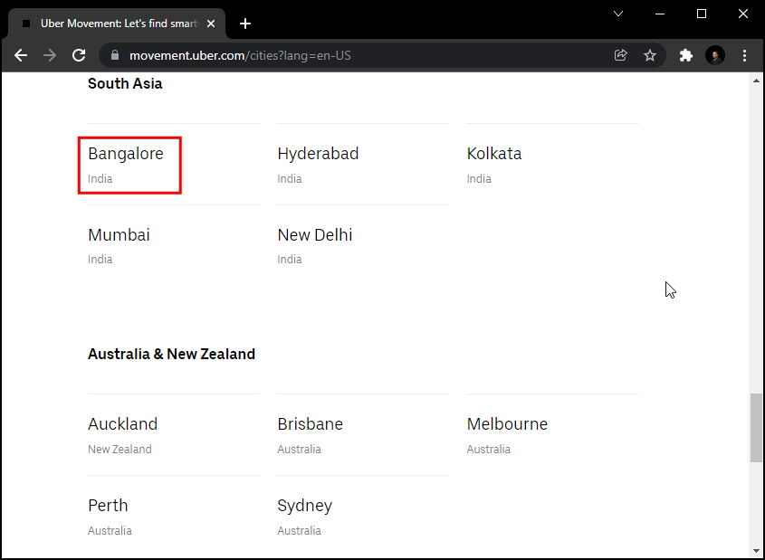
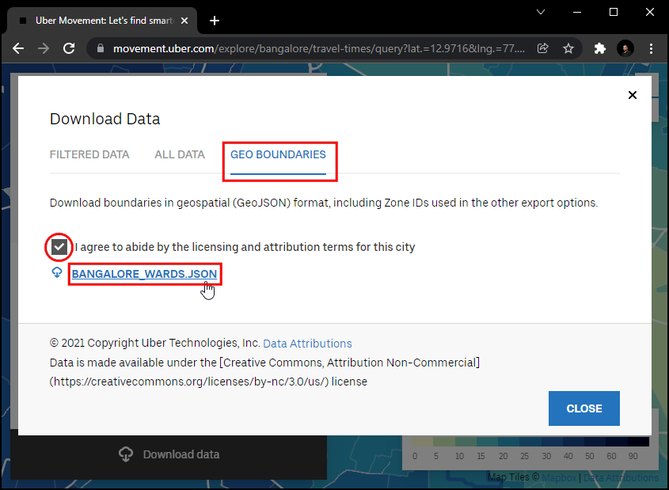
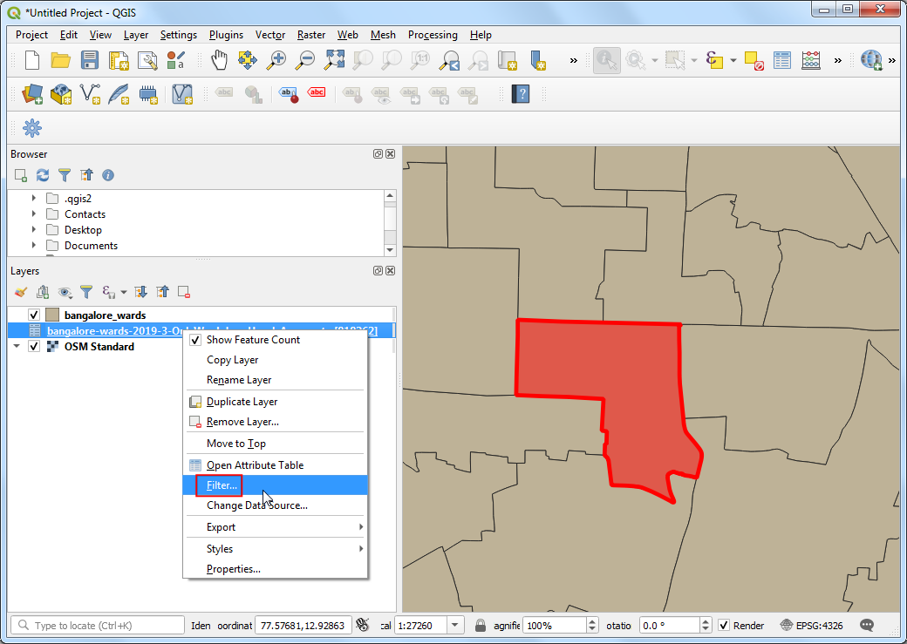

Ujaval Gandhi
Ujaval GandhiAnaliza vremena putovanja pomoću Uber kretanja (QGIS3)¶
Упозорење
Podaci o kretanju Ubera su obustavljeni [pogledajte obaveštenje]. I dalje možete pratiti tutorijal koristeći arhivske podatke date u tutorijalu i naučiti tehniku analize vremena putovanja pomoću QGIS-a.
Uber Movement deli anonimizovane i agregirane podatke o vremenu putovanja za mnoge gradove širom sveta. Proizvod Travel Times organizacije Uber Movement je javni skup podataka koji meri putovanje od zone do zone u gradu. Ova vremena su zasnovana na stvarnim Uber vožnjama i predstavljaju tačan prikaz zagušenja i obrazaca saobraćaja u gradu. Ovo je veliki, otvoreno dostupan skup podataka agregiran iz miliona stvarnih vožnji taksijem. Ovaj tutorijal prikazuje tehnike za korišćenje takvih agregiranih skupova podataka o saobraćaju za analizu vremena putovanja u QGIS-u.
Pregled zadatka¶
Koristićemo agregirani skup podataka o saobraćaju za grad Bangalor, Indija, da bismo pronašli vreme putovanja do odabrane lokacije u gradu. Takođe ćemo kreirati „Izohronu mapu <https://en.wikipedia.org/wiki/Isochrone_map>”_ za prag vremena putovanja od 30 minuta.
Druge veštine koje ćete naučiti¶
Učitajte GeoJSON datoteku u QGIS
Dobijte podatke¶
Preuzećemo skup podataka o vremenima putovanja za grad Bangalor, Indija.
Idite na sajt Uber Movement i kliknite na Cities.

Potražite „Bangalor“.

Kliknite na Preuzmi podatke.

U iskačućem prozoru „Preuzmi podatke“, prebacite se na GEO BOUNDARIES. Sadržaće datoteku Banglore Wards GeoJSON. Prihvatite informacije o licenci i kliknite na
BANGLORE_WARDS.JSONda biste preuzeli.

Zatim pređite na „SVI PODACI“. Ovi podaci su dostupni od 2016. do 2020. godine, a svaka godina je podeljena na 4 kvartala. Preuzećemo podatke za „3. kvartal 2019. godine“. Izaberite ih i kliknite na „Vreme putovanja po satu dana (samo radnim danima)“. Ova datoteka će sadržati sve anonimne informacije o Uber putovanju radnim danima u Bangaloru od jula do septembra 2019. godine.

Radi vaše udobnosti, podatke možete preuzeti sa linkova ispod.
bangalore-wards-2019-3-OnlyWeekdays-HourlyAggregate.csv
Izvor podataka: [UBER]
Procedura¶
Pronađite datoteku
bangalore_wards.jsonu panelu Browser i prevucite je na platno. Zatim ćemo učitati sloj osnovne mape iz OpenStreetMap-a. Koristićemo dodatak QuickMapServices za pristup osnovnoj mapi. Nakon instalacije, idite na . Sloj pločica osnovne mape iz OpenStreetMap-a biće dodat u projekat. Zatim kliknite na dugme Open Data Source Manager.

Pređite na karticu Razgraničeni tekst. Pregledajte datoteku
bangalore-wards-2019-3-OnlyWeekdays-HourlyAggregate.csvi izaberite je. Pošto je ova CSV datoteka samo tabelarni podaci, izaberite opciju Bez geometrije (samo tabela atributa) i kliknite na Dodaj.

Sloj „bangalore-wards-2019-3-OnlyWeekdays-HourlyAggregate“ biće dodat na panel Layers. Ovaj sloj sadrži anonimizovane i agregirane podatke o lokaciji putovanja između različitih zona grada. Svaki red tabele sadrži kolone za izvornu zonu („sourceid“), odredišnu zonu („dstid“), sat u danu („hod“) i prosečno vreme putovanja agregirano iz svih putovanja između ovih zona u tom satu („mean_travel_time“). Više o ovom skupu podataka možete saznati u dokumentu „Movement: Travel Time Calculation Methodology (pdf)“ <https://d3i4yxtzktqr9n.cloudfront.net/web-movement/76002ded222a46a02ae89f207e91e335.pdf>“. Pre nego što nastavimo, proverimo koliko je zapisa podataka prisutno u sloju. Kliknite desnim tasterom miša na sloj „bangalore-wards-2019-3-OnlyWeekdays-HourlyAggregate“ i izaberite Show Feature Count. Ukupan broj redova iz tabele biće prikazan pored njega. Ovo je prilično velika tabela, ali nam nisu potrebni svi redovi podataka za našu analizu. Sada ćemo identifikovati našu ciljnu lokaciju i filtrirati ovu tabelu prema zapisima podataka za nju.

Želimo da izračunamo sva područja koja su dostupna u roku od 30 minuta od određene lokacije. Koristeći osnovnu mapu OSM Standard, možete pronaći lokaciju koja vas zanima. Zatim izaberite sloj
bangalore_wards, koristite alatku Identify i kliknite na njega. Rezultati će prikazati atribute zone koja sadrži lokaciju. Za potrebe ovog tutorijala, pretpostavimo da je naša ciljna lokacija unutar zone JP Nagar sa MOVEMENT_ID 193.

Možemo filtrirati zapise o vremenu putovanja samo na one koji imaju ovu zonu kao odredište. Takođe možemo ograničiti našu analizu na špic jutarnjeg putovanja na posao od 9 do 10 časova. Kliknite desnim tasterom miša na sloj „bangalore-wards-2019-3-OnlyWeekdays-HourlyAggregate“ i izaberite Filter.

Unesite sledeći izraz filtera i kliknite na OK.
"dstid" = 193 AND "hod" = 9
Nazad u glavnom QGIS prozoru, videćete da je broj zapisa u filtriranoj tabeli sada smanjen na samo 197. Pošto u gradu postoji ukupno 198 zona, imamo zapise o vremenima putovanja između 1 odredišnog odeljenja i 197 izvornih zona. Otvorite tabelu atributa oba sloja pomoću dugmeta Otvori tabelu atributa u traci sa alatkama Atributi.

Sada imamo oblike odeljenja u sloju
bangalore_wardsi tabelarne informacije u slojubangalore-wards-2019-3-OnlyWeekdays-HourlyAggregate. Možemo spojiti informacije o atributima sa oblicima koristeći zajednički atribut. Ovde su kolonaMOVEMENT_IDiz slojabangalore_wardsi kolonasourceidizbangalore-wards-2019-3-OnlyWeekdays-HourlyAggregatejedinstveni identifikatori odeljenja koji se mogu spojiti. Ova operacija se naziva Spajanje tabele.
Pre nego što možemo da spojimo ova dva sloja, moramo da se uverimo da se vrednosti u obe kolone potpuno podudaraju. Iako izgledaju isto, različitog su tipa. Pošto GeoJSON format nema način da odredi tipove svojstava, pretpostavlja se da su sve vrednosti tipa String - tj. tekst. Ali kada uvezemo CSV datoteku u QGIS, QGIS podrazumevano pokušava da odredi tipove kolona na osnovu vrednosti i dodeli odgovarajući tip polja. Za CSV datoteku, tip podataka za kolonu
sourceidje dodeljen kao Integer. Dakle, takođe moramo da konvertujemo kolonu iz GeoJSON u tip Integer. Idite na . Dvaput kliknite da biste ga pokrenuli.

Izaberite
bangalore_wardskao Ulazni sloj. Nazovite naziv polja kaojoinfieldi izaberite Tip polja rezultata kaoCeo broj. UnesiteMOVEMENT_IDkao izraz. Kliknite na dugme … pored Izračunato i izaberite Sačuvaj u datoteku… zatim unesite ime izlazne datoteke kaobangalore_wards_fixed.gpkg. Kliknite na Pokreni. Zatvorite kalkulator polja.

Novi sloj
bangalore_wards_fixedbiće dodat na panel Slojevi. Sada smo spremni da izvršimo spajanje. Idite na . Dvaput kliknite da biste ga pokrenuli.
Izaberite
bangalore_wards_fixedkao Ulazni sloj ijoinfieldkao Polje tabele. Izaberitebangalore-wards-2019-3-OnlyWeekdays-HourlyAggregatekao Ulazni sloj 2 isourceidkao Polje tabele 2. Nazovite Spojeni sloj kaouber_travel_times.gpkgi kliknite na Pokreni.

Novi sloj
uber_travel_timesbiće dodat na panel Layers. Hajde da ga stilizujemo da bismo vizualizovali rezultat spajanja. Kliknite na Otvori panel za stilizovanje slojeva. Izaberite rendererGraduatedimean_travel_timekao Vrednost. Izaberite rampu boja i kliknite na Klasifikuj. Videćete mapu koja prikazuje povećanje vremena putovanja što se više udaljavate od odredišta.
Ali želimo da analiziramo i izdvojimo područja koja se nalaze u krugu od 30 minuta od vremena putovanja, tako da moramo da obavimo još malo obrade. Vratite stil na Single symbol renderer. Kliknite desnim tasterom miša na sloj
uber_travel_timesi izaberite Filter.

Unesite sledeći izraz da biste izabrali sve zone u roku od 1800 sekundi (30 minuta) od srednjeg vremena putovanja. Takođe treba da uključimo našu odredišnu zonu koja će imati vreme putovanja 0.
"mean_travel_time" <= 1800 OR "MOVEMENT_ID" = 193
Sloj će sada prikazivati grupu poligona koji čine područje od interesa. Sada ćemo ih sve spojiti u jedan poligon. Idite na . Dvaput kliknite da biste ga pokrenuli.

Izaberite
uber_travel_timeskao Ulazni sloj. Nazovite Rastvoreni sloj kao30min_isochrone.gpkg. Kliknite na Pokreni.

Novi sloj
30min_isochronebiće dodat na panel Layers koji prikazuje rezultat naše analize.

If you want to give feedback or share your experience with this tutorial, please comment below. (requires GitHub account)